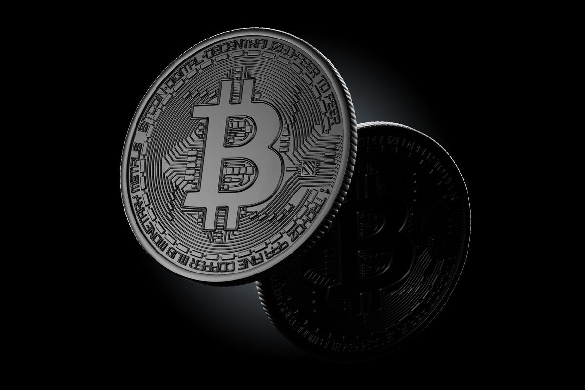
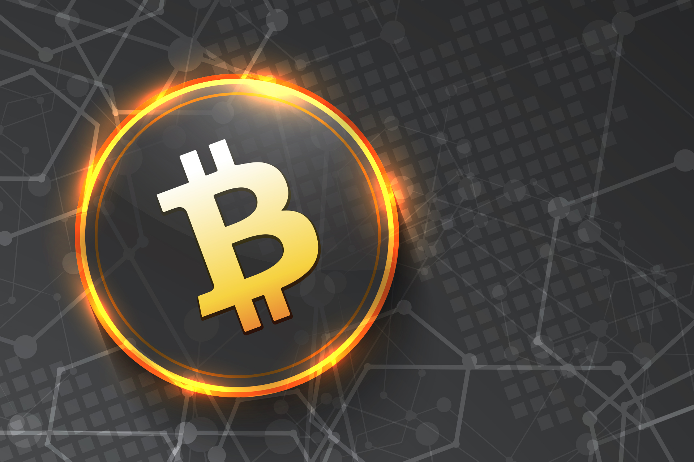
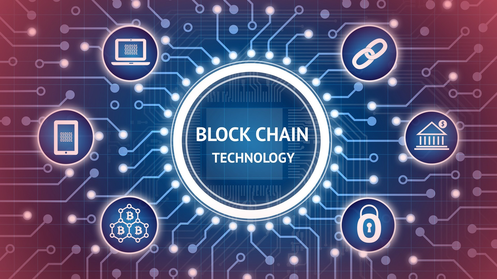
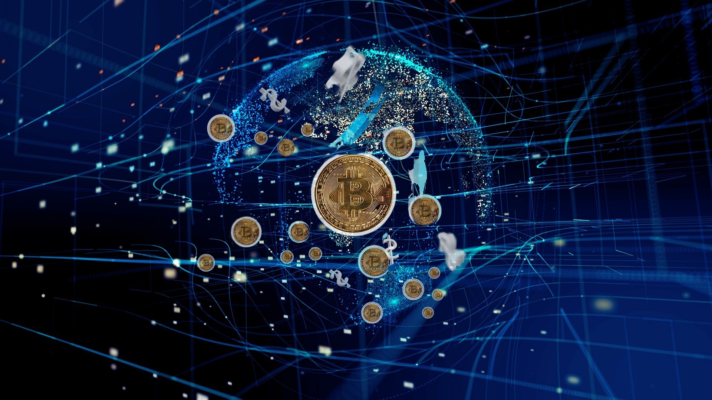
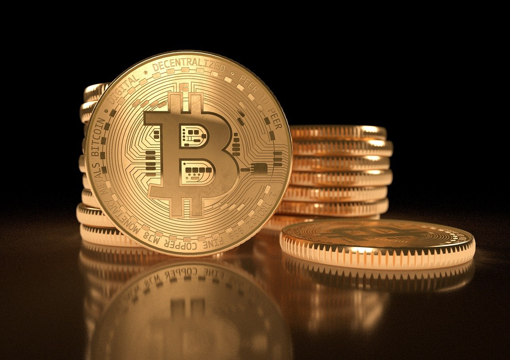
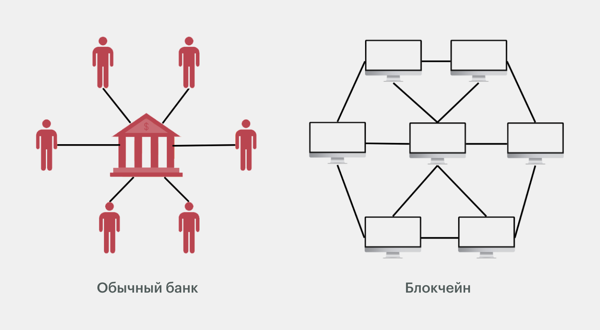
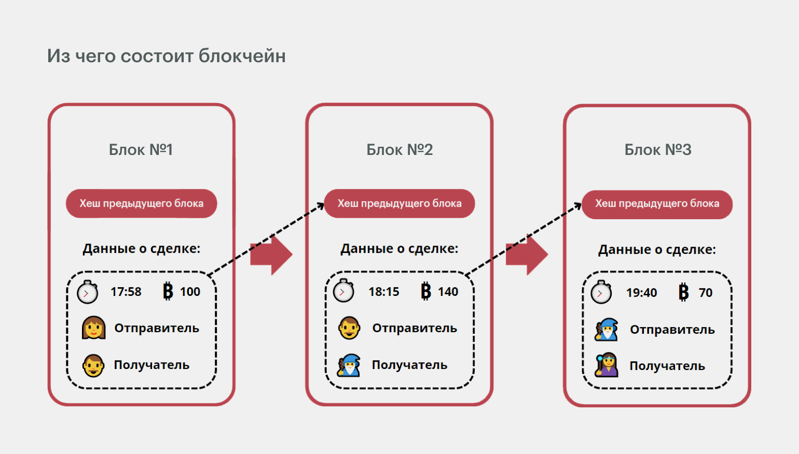

Что такое криптовалюта и блокчейн
Криптовалюта — цифровая валюта, не имеющая физического выражения в монетах или банкнотах. Она децентрализована — это значит, что нет единого центра, который хранит информацию о сделках с ней.
Простыми словами, это виртуальные деньги, выпуск которых не контролирует государство. Криптовалюту «создают» пользователи — частные лица или компании. Так, криптобиржи почти всегда выпускают свою криптовалюту, которая даёт пользователям преимущества — например, снижение комиссии.
Многие привыкли говорить, что криптовалюта «хранится» в кошельках. В действительности криптовалюта никогда не находится в криптокошельке или на бирже — она всегда остается на блокчейне. Криптовалютная биржа просто может хранить приватные ключи, которые предоставляют доступ к этим средствам.
Первая и самая известная криптовалюта — это биткоин. Она была создана в 2009 году неизвестным человеком или группой лиц под псевдонимом Сатоши Накамото. С тех пор появились тысячи других криптовалют со своими уникальными характеристиками и задачами. Подробнее о истории криптовалюты.
Криптовалюты бывают двух типов: коины (монеты) и токены (цифровые активы). Технически между ними есть разница, но на практике они очень похожи. У обоих есть стоимость, которая формируется на основе спроса и предложения. Можно покупать и продавать их, расплачиваться ими.
Как работает криптовалюта
Криптовалюты используют передовые математические алгоритмы для обеспечения безопасности транзакций и защиты данных от несанкционированного доступа или манипуляций. Эти алгоритмы выполняют две основные функции: сохранение конфиденциальности личности пользователя и проверка подлинности транзакций.
Транзакции блокчейна являются общедоступными, а адреса (открытые клдонимнымючи) являются псеви, хотя и не полностью анонимными. Другими словами, хотя транзакции видны в блокчейне, пользователей, стоящих за ними, нелегко идентифицировать. Криптовалюты достигают этого за счет использования криптографических методов, таких как хеш-функции и цифровые подписи.
Криптовалюта достигает автономии через распределенную сеть компьютеров, известную под общим названием блокчейн, которая, по сути, представляет собой децентрализованную цифровую книгу, в которой хранятся данные транзакций на множестве специализированных компьютеров в сети.
Каждый из этих компьютеров, также называемых узлами , поддерживает копию реестра, а алгоритм консенсуса сохраняет блокчейн, гарантируя отклонение поддельных или несовместимых копий. Эта распределенная архитектура повышает безопасность сети, поскольку в ней нет единой точки отказа, такой как банковское хранилище, которую могли бы использовать злоумышленники.
Криптовалюты позволяют людям переводить средства напрямую друг другу. В типичной криптовалютной транзакции отправитель инициирует передачу, создавая цифровую подпись с использованием своего закрытого ключа. Затем транзакция отправляется в сеть, где узлы проверяют ее, проверяя цифровую подпись и гарантируя, что у отправителя достаточно средств.
После проверки транзакция добавляется в новый блок, который затем добавляется в существующую цепочку блоков. Хотя это может показаться сложным, майнеры позаботятся об этих шагах, поэтому пользователю не нужно о них беспокоиться.
Что делает криптовалюту уникальной
Криптовалюты отличаются от традиционных протоколов и валют инновационными функциями, которые оказывают влияние на различные экосистемы — от финансовых до технологических. Среди уникальных характеристик криптовалют можно выделить следующие:
1. ДецентрализацияДецентрализованная архитектура криптовалюты устраняет необходимость в центральном органе. Это обеспечивает большую автономию, а также меньшую уязвимость для манипуляций или контроля со стороны одного объекта.
2. Прозрачность и неизменность Технология блокчейна сохраняет записи обо всех транзакциях в прозрачном и защищенном от взлома реестре. Поэтому после добавления транзакции в блокчейн ее нельзя будет изменить или удалить, при этом просмотреть ее сможет любой желающий.
3. ПрограммируемостьМногие криптовалюты, такие как ETH, являются программируемыми, что позволяет разработчикам развертывать смарт-контракты для создания децентрализованных приложений (DApps) и других инновационных решений поверх блокчейнов. Кроме того, поскольку блокчейны без разрешений имеют открытый исходный код, любой может начать развертывание кода поверх блокчейна и создать свои собственные DApp.
4. Доступ из любого уголка мира Криптовалюты можно легко переводить в разные точки мира, осуществляя международные транзакции и денежные переводы.
5. Ограниченное предложение монет Многие криптовалюты имеют ограниченный запас монет, а это означает, что команды, стоящие за ними, будут создавать только конечное количество монет. Этот дефляционный аспект криптовалют потенциально может со временем стать положительным, поскольку дефицит стимулирует спрос.
Напротив, фиатные валюты часто вызывают инфляцию, потому что центральные банки могут печатать больше денег. Однако при ограниченном предложении криптоинфляцию можно лучше контролировать, поскольку общее количество монет заранее определено.
Что такое Блокчейн

Блокчейн — это реестр для хранения и передачи цифровых активов. Активы могут быть любые: деньги, акции, игровые персонажи, произведения искусства — всё что угодно. Идея в том, что блокчейн позволяет взять какую-то вещь в Сети и сказать: «Это моё». И никто не сможет её у вас украсть, взломать или переписать.
Все записи в блокчейне хранятся в виде блоков, связанных между собой специальными ключами. Если изменить какую-то запись, ключи у блоков не совпадут, и цепочка разрушится. Поэтому блоки в блокчейне нельзя удалять и редактировать — можно лишь посмотреть, что находится внутри. Кстати, с английского blockchain так и переводится — «цепочка блоков».
Изначально блокчейн был нишевой технологией для подписания цифровых документов. А потом энтузиасты догадались использовать его для перевода денег между людьми — без банков, WebMoney и прочих посредников. Так появилась криптовалюта биткоин — пока что самое известное воплощение технологии.
Как работает блкочейн
Допустим, вы программист в европейской компании. Приближается Международный день пожилых людей, и вы решили поздравить свою бабушку, которая живёт в России, — отправить ей немного денег на новое пальто.
Можно сделать это по-старинке — через обычный банк:
- Открываете приложение банка.
- Отправляете деньги бабушке на карту.
- Банк списывает деньги с вашего счёта.
- Зачисляет на счёт бабушке.
Звучит вроде просто и привычно, но есть загвоздка. Вся информация о переводе лежит на сервере в виде обычной строки в базе данных. Если кто-то взломает этот сервер и перепишет строку, бабушка денег не получит. Если банк вдруг схлопнется из-за кризиса, денег лишатся вообще все.
А теперь посмотрите, как изящно все эти проблемы решает блокчейн:
- Вы подключаетесь к блокчейн-сети.
- Заводите бабушке кошелёк и отправляете туда деньги.
- Перевод заносится в блокчейн и шифруется.
- Информацию о переводе получают все участники сети — а в крупных блокчейнах это миллионы человек.
Если кто-то захочет удалить данные о вашем переводе, ему придётся делать это сразу на всех компьютерах сети — а не на одном каком-то сервере. Такая фишка блокчейна называется децентрализацией. Представьте себе банк, где у каждого клиента есть копия всех платежей и переводов — вот это и будет блокчейн.
Из чего состоит блокчейн
Итак, мы оформили перевод — в цепочке сразу появился новый блок. Если бабушка захочет отправить вам деньги обратно, это будет уже новый блок — мы помним, что удалять и редактировать записи в блокчейне нельзя.
Чтобы соединять между собой звенья цепочки, разработчики придумали хитрость — в каждый новый блок добавляется хеш предыдущего блока. Хеш — это зашифрованные данные о сделке в виде уникального набора букв и цифр. Если поменять какую-то запись, хеши у блоков не совпадут, и сеть не примет изменения.
Например, в биткоине все операции хешируются алгоритмом SHA-256. Он превращает любую информацию в строку размером 256 бит. Без разницы, будет ли это «Война и мир» Толстого или строчка из песни Михаила Боярского — на выходе получится шифрованная колбаса весом в 256 бит. Выглядит она примерно так:
- c9f9053e2fb3fcec35ceeafab7bda50ece7d924f886c117b142dfa2df1d63574
В нашем случае, если перевести эту колбасу на русский, выйдет что-то вроде: «Петя Иванов отправил Зинаиде Степановне Ивановой 5000 рублей 1 октября 2022 года в 14:30».
Тут есть нюанс: если Петю заменить, скажем, на Диму, получится совершенно другой хеш. Следующий блок заметит изменения и отправит сигнал всем участникам сети: «Что-то тут нечисто, нас хотят взломать». И если большинство компьютеров знать не знают никакого Диму, блок останется неизменным.
Вернёмся к нашей Зинаиде Степановне. Предположим, деньги ей не особо нужны, и она решает отправить их вашему брату, который учится на первом курсе в Москве. Вот как система будет работать в таком случае:
Шаг 1. Блокчейн возьмёт хеш предыдущего блока.
Шаг 2. Добавит к нему новые данные:
- 3e84907df11600de355a07de0e255fcae469522c418f4f12945b586f619bedc6
- «Данные о сделке Зинаиды Степановны и Васи».
Шаг 3. В таком виде запись снова хешируется, и получится ещё один блок:
- 0118b7211febd23303ed123e3c441301dba8062fa1dcaaa4bb682ef4b8fcc3fe
Этот процесс можно сравнить со старой детской игрой в снежный ком, когда каждый по очереди называет своё имя плюс имена предыдущих участников. Если кто-то сбился или назвал не все имена, цепочка прерывается и игрок выбывает.
Как и в каких крупных компаниях применяют блокчейн
Так как блокчейн трудно взломать или подделать, его часто применяют для защиты цифровых активов: файлов, документов, сделок или транзакций. Например, можно составить и заверить ипотечный договор без обращения к нотариусу. Или оформить права собственности на землю и недвижимость, как это уже делают в Грузии.
Вот для чего используют блокчейн крупные российские и зарубежные компании:
- Сбербанк — для учёта ипотечных закладных и других ценных бумаг.
- S7 Airlines — для продажи авиабилетов без посредников.
- «Норникель» — для выпуска токенов, обеспеченных полезными ископаемыми.
- Maersk — для отслеживания морских перевозок.
- Renault — для сертификации автомобильных запчастей.
- IBM — для разработки системы межбанковских переводов (аналога Swift).
А вот наиболее распространённые сферы, которые без блокчейна уже трудно представить:
Криптовалюты. Если вы были в интернете в последние пять лет, то наверняка слышали про пиринговые валюты: Bitcoin, Litecoin, Ethereum и другие. Интерес к ним сейчас не шквальный, но их по-прежнему ценят фрилансеры, блогеры, программисты, цифровые кочевники и все, кому важен свободный обмен деньгами без посредников.
Самые поплуряные криптовалюты, можно узнать на сайте Crypto Logos
Смарт-контракты. С помощью блокчейна можно заключить безопасный договор с любым контрагентом — например, арендатором квартиры. Штука в том, что такой договор можно настроить на какое-то действие и добавить в прошивку умного устройства. Допустим, кто-то давно не платит проценты по кредиту за машину — блокчейн передаёт эти данные на сервер, и доступ к машине блокируется до уплаты долга.
Государственное управление.> После того как взлетел биткоин, блокчейн перестал быть забавой для гиков и технократов — теперь его внедряют банки, госкомпании и даже некоторые государства. Например, правительство Тайваня использует блокчейн на базе Ethereum для защиты от кибератак со стороны Китая.
Медицина. Данные о здоровье — лакомый кусочек для мошенников, хакеров и фармацевтических компаний. Чтобы избежать утечек, многие клиники переносят медицинские карты пациентов в блокчейн — так их невозможно украсть, взломать или подделать. Ещё такие карты удобно заполнять и передавать между учреждениями.
Интернет вещей. Любое умное устройство работает в паре с каким-то сервером: передаёт данные, скачивает обновления, обращается к условной «Алисе». Если этот сервер взломает хакер, он может управлять устройством удалённо — например, установить во всём доме температуру 32 °C. Чтобы этого избежать, многие компании хранят данные пользователей децентрализованно — то есть в блокчейн-сетях.
Что дальше будет с блокчейном
По словам экспертов, к 2027 году в блокчейне будет храниться до 10% мирового ВВП. Например, цифровые дистрибьюторы смогут лицензировать фильмы, музыку и книги через NFT-токены. А государства полностью переведут в блокчейн выборы, закупки, регистрацию недвижимости и другие процедуры.